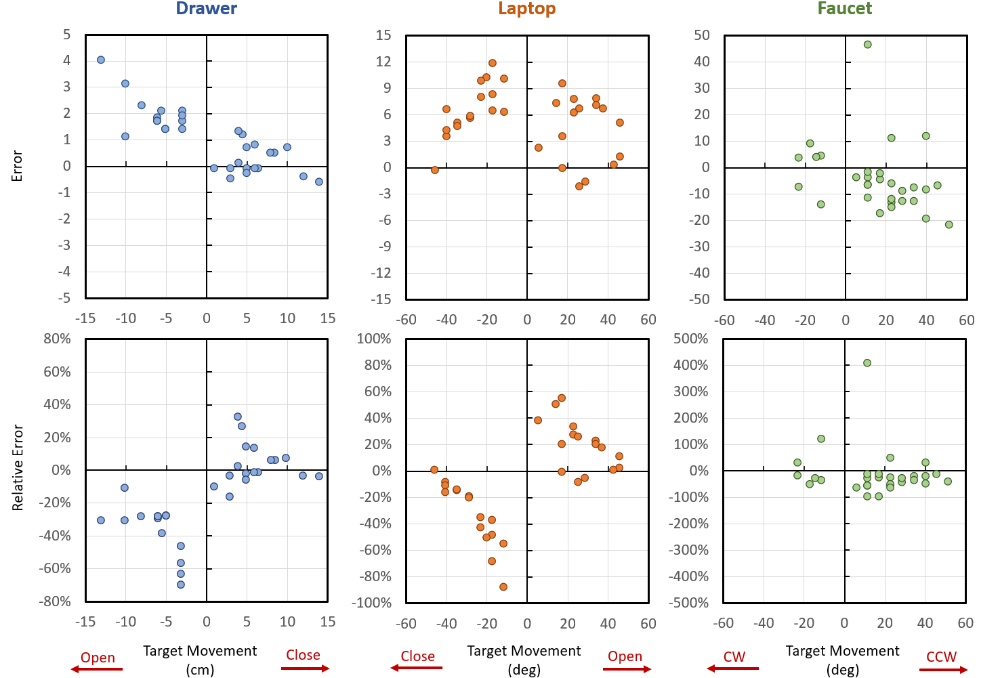
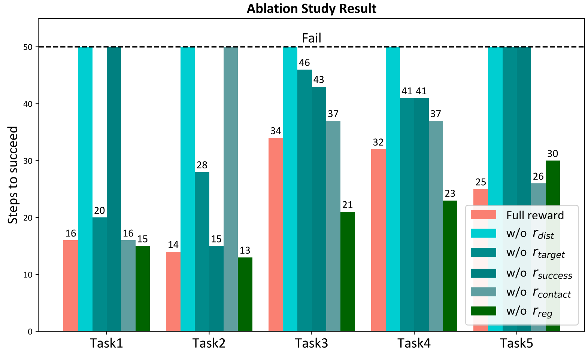
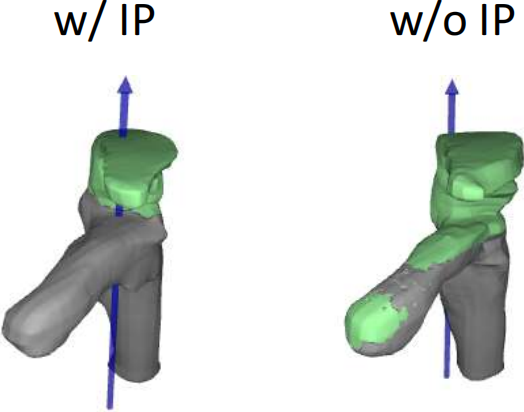

Results

Results of real-world articulated object manipulation experiments. Each row shows the result of 3 categories respectively. The left column shows the error of the manipulation. The right column shows the relative error of the manipulation. The sign of the target movement denotes the direction of the movement (e.g. opening or closing, clockwise (CW) or counterclockwise (CCW).

Results of ablation study on reward function. The 5 tasks are opening/closing drawer, opening/closing laptop and turning faucet. The task is considered to be failed if it is not done when time step reaches 50.

Ablation study on Interactive Perception. The model constructed with Interactive Perception (IP) has more accurate movable part segmentation and joint axis estimation than without IP.